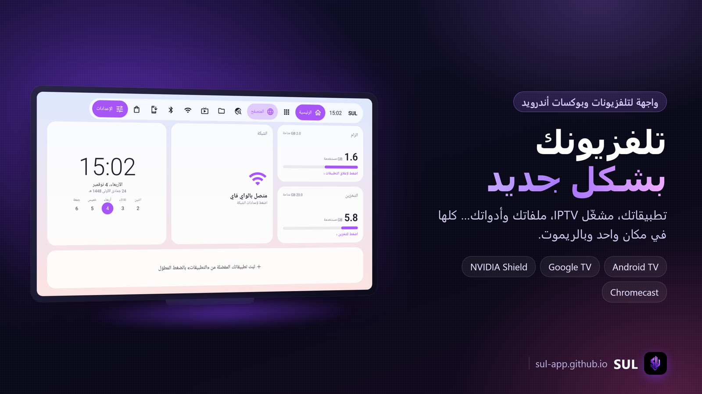

التنزيل
اختر الملف بالريموت واضغط موافق، وبعد ما يخلص التنزيل اضغط «تثبيت».
1طريقة التثبيت
من تطبيق Downloader على التلفزيون أو البوكس، أو بنقل الملف بفلاشة.
- اسمح بتثبيت التطبيقات: الإعدادات ← التطبيقات ← الأمان والقيود ← مصادر غير معروفة، وفعّل Downloader (أو مدير الملفات اللي تستخدمه).
- نزّل SUL: افتح Downloader واكتب الكود
9720997(أو الرابطsul-app.github.io)، واختر «SUL» من قسم التنزيل، ثم «تثبيت». - افتح SUL: يطلع لك دليل أول تشغيل يعرّفك على الواجهة، واختر اللغة (عربي أو إنجليزي).
- خلّ زر الرئيسية يفتح SUL: من إعدادات SUL ← «النظام والأداء» ← «زر الرئيسية يفتح SUL». اضغط «تفعيل الخدمة بـShizuku»، أو «فتح إعدادات إمكانية الوصول» وفعّل «SUL — زر الرئيسية». بعدها كل ما تضغط زر الرئيسية في الريموت ينفتح SUL، والضغطة المطوّلة تفتح الإعدادات السريعة مثل العادة.
- (اختياري) Shizuku: ثبّته وشغّله من التلفزيون نفسه بدون كمبيوتر (الطريقة تحت)، ثم افتح SUL ووافق على طلب الصلاحية.
التثبيت الكامل بـ Launcher Manager (SUL الواجهة الوحيدة)
طريقة «زر الرئيسية يفتح SUL» تكفي أغلب الناس، بس تظهر فيها واجهة جوجل لحظة قبل SUL. لو تبي SUL يكون الواجهة الرئيسية الوحيدة بدون ما تظهر واجهة جوجل أبداً، استخدم Launcher Manager: يوقّف واجهة جوجل الأصلية ويخلي زر الرئيسية يفتح SUL مباشرة. ما يحتاج كمبيوتر.
- فعّل خيارات المطوّر: الإعدادات ← النظام ← حول ← اضغط «إصدار نظام Android TV» 7 مرات.
- فعّل «تصحيح أخطاء USB»: الإعدادات ← النظام ← خيارات المطوّر ← «تصحيح أخطاء USB» (ADB).
- ثبّت Launcher Manager وافتحه: من قسم التنزيل فوق. يطلب «السماح بتصحيح الأخطاء؟»، اختر «السماح دائماً» ثم «سماح» (هو يتصل بالجهاز نفسه).
- اختر SUL: من قائمة الواجهات داخل Launcher Manager اختر «SUL».
- «Disable Stock Launcher»: يوقّف واجهة جوجل الأصلية. من الحين زر الرئيسية يفتح SUL على طول.
مع إيقاف واجهة جوجل ما تظهر بعض أشياءها (مثل الاقتراحات والملفات الشخصية في Google TV)، وما تحتاج خدمة «زر الرئيسية يفتح SUL» لأن SUL صار الواجهة نفسها.
تشغيل Shizuku بدون كمبيوتر
يحتاج أندرويد 11 أو أحدث. بعض الشاشات (مثل إدخال رمز الاقتران) ما توصل لها بالريموت، فاستخدم ماوس (بلوتوث أو سلكي بمنفذ USB) أو فعّل TalkBack مؤقتاً.
- فعّل خيارات المطوّر: الإعدادات ← النظام ← حول ← اضغط على «إصدار نظام Android TV» (أو «رقم الإصدار») 7 مرات لين يطلع «أنت الآن مطوّر».
- فعّل التصحيح: الإعدادات ← النظام ← خيارات المطوّر ← فعّل «تصحيح أخطاء USB» و«تصحيح الأخطاء اللاسلكي» (والتلفزيون متصل بالواي فاي).
- ابدأ الاقتران من Shizuku: افتح Shizuku ← «بدء عبر تصحيح الأخطاء اللاسلكي» ← «الاقتران». يطلع إشعار من Shizuku فيه خانة لرمز الاقتران.
- خذ رمز الاقتران: ارجع لخيارات المطوّر ← «تصحيح الأخطاء اللاسلكي» ← «إقران الجهاز باستخدام رمز إقران». يطلع رمز من 6 أرقام.
- اكتب الرمز في إشعار Shizuku: افتح الإشعارات واكتب الرمز في خانة Shizuku. هنا تحتاج الماوس أو TalkBack، لأن الريموت ما يوصل لخانة الإشعار في أغلب التلفزيونات.
- شغّل Shizuku: ارجع لـShizuku واضغط «بدء». لما يصير «Shizuku قيد التشغيل» افتح SUL ← الإعدادات ← النظام والأداء ← «طلب الصلاحية» ووافق.
ولو عندك كمبيوتر، تقدر تشغّله بأمر وحد:
adb shell sh /sdcard/Android/data/moe.shizuku.privileged.api/start.sh
adb shell appops set com.sul.launcher.release ACCESS_RESTRICTED_SETTINGS allow
adb install -r SUL.apk
صور
من SUL على بوكس أندرويد TV.



وش يسوي SUL
كل شيء مصمم للريموت: تحديد واضح، أزرار كبيرة، وما تحتاج ماوس.
واجهة رئيسية
تطبيقاتك ومفضلتك بأكثر من تصميم (منها التصميم الملكي)، ثيمات وخطوط، ساعة وطقس ومعلومات الجهاز، وشاشة توقف بصورة وأيقونة متحركة.
مشغّل IPTV
أضف قائمة M3U أو بيانات Xtream Codes: قنوات مباشرة، أفلام ومسلسلات، دليل البرامج، المفضلة، وتقليب القنوات بالأسهم. SUL مشغّل فقط ولا يوفّر أي محتوى.
مشغّل ذكي
يشغّل الروابط والملفات من أي تطبيق، يختار الجودة والصوت والترجمة، يدعم HDR، ويعرض معلومات الاتصال ويحاول يصلح البث لو علق.
مدير ملفات
ملفات الجهاز والفلاشة: فتح، نسخ، نقل، إعادة تسمية، حذف، تحديد الكل. يرسل الملفات لجوالك أو الكمبيوتر برمز QR، ويستقبل منها على نفس الشبكة.
مثبّت التطبيقات
اكتب كود Downloader أو رابط صفحة ويجيب لك ملف APK ويثبّته، مع متجر صغير للتطبيقات المعروفة.
زر الرئيسية
حتى لو جهازك ما يسمح بتغيير الواجهة الافتراضية، SUL يقدر ينفتح من زر الرئيسية بخدمة إمكانية الوصول، ويقدر ينفتح أول ما يشتغل الجهاز.
أدوات النظام
تنظيف الذاكرة والكاش، إغلاق التطبيقات، المساحة، والإعدادات السريعة من مكان واحد (بعضها يحتاج Shizuku).
عربي وإنجليزي
الواجهة كاملة بالعربي أو الإنجليزي، والاتجاه يتغير معها.
أسئلة
يشتغل على أي جهاز؟
تلفزيونات وبوكسات أندرويد TV و Google TV (أندرويد 8 وأحدث). جرّبناه على TCL و Skyworth و NVIDIA Shield و Chromecast مع Google TV.
أحتاج Shizuku؟
لا، SUL يشتغل بدونه. Shizuku يفتح أدوات إضافية مثل إغلاق التطبيقات وتفعيل زر الرئيسية بضغطة وحدة.
أحتاج كمبيوتر لـShizuku؟
لا. شغّله من التلفزيون بـ«تصحيح الأخطاء اللاسلكي» (الطريقة). تحتاج بس ماوس أو TalkBack عشان تكتب رمز الاقتران.
كيف أرجع لواجهة جوجل؟
اضغط زر الرئيسية ضغطة مطوّلة، أو أطفِ «زر الرئيسية يفتح SUL» من إعدادات SUL ← النظام والأداء. ولو استخدمت Launcher Manager: افتحه واضغط «Enable Stock Launcher».
وش الفرق بين «زر الرئيسية يفتح SUL» و Launcher Manager؟
الأولى خفيفة وما تلمس واجهة جوجل، بس تظهر واجهة جوجل لحظة قبل SUL. Launcher Manager يوقّف واجهة جوجل فيصير SUL الواجهة الوحيدة، ويرجعها بضغطة.
هل SUL يجمع بياناتي؟
لا. خدمة زر الرئيسية ما تقرأ محتوى الشاشة، بس تعرف متى تنفتح واجهة النظام عشان تفتح SUL بدالها.